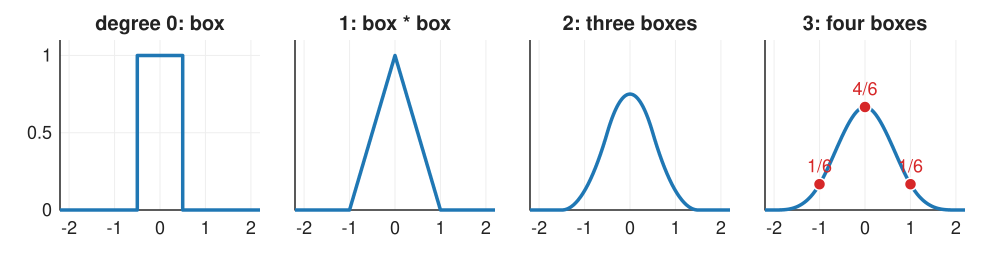
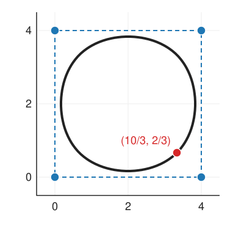
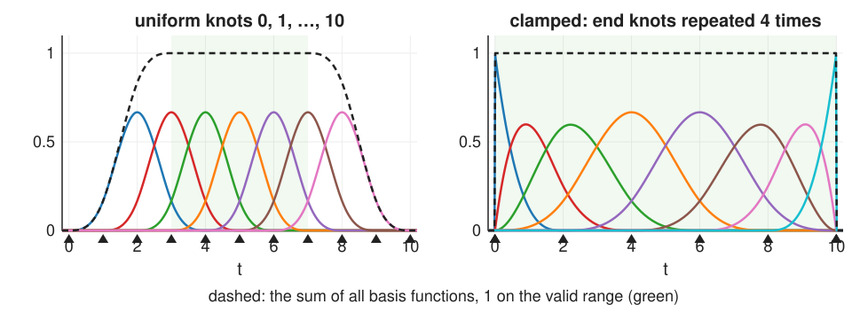

The previous unit ended with a wish: smoothness and local control built in, not kept by hand. B-splines deliver both.
A curve as a sum of bump functions times control points: the B-spline basis.
Bumps by convolution: box, hat, smooth bell (nearest, linear, cubic).
Knots: where pieces join; partition of unity, local control, corner cutting.
Knot multiplicity, clamped and closed curves; Cox–de Boor as a picture.
NURBS: weights, homogeneous coordinates, and exact circles.
Spline surfaces, briefly.
Slides titled The math give the formulas and proofs; the ideas are complete without them.
A basis of bumps
Write the curve as control points times basis functions: \mathbf{C}(t) = \sum_i \mathbf{P}_i\,N_i(t).
Bézier did this too, with the Bernstein polynomials, but each of them is non-zero on the whole curve.
Now choose bump-shaped N_i that are non-zero only on a short interval and overlap only with their neighbours. Then \mathbf{P}_i moves only the part of the curve under its bump.
The control points are the coordinates of the curve in this basis, like the Fourier coefficients of a signal in the basis of waves (Fourier unit).
Which bumps? Ones that are smooth, sum to 1, and are cheap to evaluate.
Bumps by convolution

Recall from the filtering unit: convolving two kernels gives a new kernel.
Degree 0: a box of width 1. As an interpolator: nearest neighbour.
Degree 1: box * box = a hat (triangle). As an interpolator: linear.
Degree 3: four boxes = a smooth bell of width 4, the cubic B-spline β³. Its values at the integers: \tfrac16, \tfrac46, \tfrac16.
Each extra box makes the bump one order smoother: the hat is continuous, the quadratic has a continuous slope, the cubic a continuous second derivative (C²).
The math: uniform B-splines
\beta^0 = the box on [-\tfrac12, \tfrac12), and \beta^p = \beta^0 * \beta^{p-1}. The cubic in closed form: \beta^3(x) = \begin{cases} \tfrac23 - x^2 + \tfrac12|x|^3, & |x| \le 1,\\ \tfrac16(2 - |x|)^3, & 1 \le |x| \le 2,\\ 0 & \text{otherwise.}\end{cases}
Each piece is a cubic polynomial; at |x| = 1 and 2 the value, slope and second derivative agree (C²). \beta^3(0) = \tfrac23, \beta^3(\pm1) = \tfrac16, \beta^3(\pm\tfrac12) = \tfrac{23}{48}.
Fourier transform (convolution → product): \hat\beta^p(\omega) = \operatorname{sinc}^{p+1}(\omega/2\pi), a better and better low-pass as p grows (unit 4).
Shifted copies sum to 1: \sum_k \beta^p(x - k) = 1 for all x (true for the box, and convolution with \beta^0, which has integral 1, keeps it).
Uniform cubic B-spline curves
With uniform knots every basis function is a shifted copy of the same bell: N_i(t) = \beta^3(t - i) (up to a shift of the parameter).
At any t, only 4 bells are non-zero: each curve point is a weighted average of 4 neighbouring control points.
At a knot the weights are \tfrac16, \tfrac46, \tfrac16: the curve point is (\mathbf{P}_{i-1} + 4\mathbf{P}_i + \mathbf{P}_{i+1})/6.
Corner cutting by hand: a closed cubic on the square (0,0), (4,0), (4,4), (0,4). At the knot of (4, 0): \tfrac16\big[(0,0) + 4\,(4,0) + (4,4)\big] = (\tfrac{10}{3}, \tfrac23). Inside the square: the curve does not pass through its control points; it cuts the corners.

Partition of unity and local control

The bumps are non-negative and sum to 1 (dashed): every curve point is a convex combination of nearby control points; the curve lies in the union of the convex hulls of each 4 neighbours; moving all points by the same vector moves the curve by it.
Local control: a cubic N_i is non-zero on 4 knot intervals (spans). Moving \mathbf{P}_i changes those 4 spans only, however many control points there are.
Smoothness for free: the curve is as smooth as the bumps (C² for cubics), whatever the control points do.
Try it: the basis functions
Knots: multiplicity, clamped and closed curves
The knot vector lists where the pieces join, in order: t_0 \le t_1 \le \dots. Uniform: 0, 1, 2, \dots
Repeating a knot reduces the smoothness there: a cubic is C² at a simple knot, C¹ at a double knot, C⁰ (a possible corner) at a triple knot. Corners where you want them, smooth elsewhere.
Clamped (end knots repeated p + 1 times): the curve starts at the first and ends at the last control point, tangent to the end legs, like Bézier. A clamped cubic with 4 control points is the cubic Bézier curve.
Closed (periodic): wrap the control polygon around; every point has a full set of neighbours. This is the natural representation of an outline (unit 3).
Cox–de Boor as a picture
How to compute a basis function on any knot vector: build it from the degree below.
Degree 0: N_{i,0} is 1 on the interval [t_i, t_{i+1}), 0 elsewhere (a box).
Degree p: blend two neighbouring degree-(p-1) functions with ramps: the left one times a ramp rising from 0 to 1 across its support, the right one times a ramp falling from 1 to 0.
Each level widens the support by one interval and adds one order of smoothness.
The demo’s lower panel shows this tower for one function: boxes → hats → quadratics → the cubic, with the ramps dashed. On uniform knots, the blend of two shifted copies with ramps is the same as convolving with one more box.
Support[t_i, t_{i+p+1}): p + 1 intervals. Non-negative by induction (both ramps are ≥ 0 on the support).
Partition of unity on [t_p, t_{n}]: by induction; the two ramps belonging to the same N_{j,p-1} (one from N_{j-1,p}, one from N_{j,p}) add up to 1.
By hand on knots 0, 1, 2, 3: N_{0,1}(t) is the hat on [0, 2]; N_{0,2}(1) = \tfrac12, N_{0,2}(1.5) = \tfrac34.
Continuity: at a knot of multiplicity m the curve is C^{p - m}.
The math: derivatives and de Boor’s algorithm
Derivative. The derivative of a B-spline curve of degree p is a B-spline curve of degree p - 1 on the same knots (without the end ones), with control points \mathbf{Q}_i = p\,\frac{\mathbf{P}_{i+1} - \mathbf{P}_i}{t_{i+p+1} - t_{i+1}}. Uniform knots: \mathbf{Q}_i = p(\mathbf{P}_{i+1} - \mathbf{P}_i), the scaled legs, as for Bézier.
De Boor’s algorithm evaluates \mathbf{C}(t) in the span [t_s, t_{s+1}) by repeated linear interpolation of the p + 1 control points \mathbf{P}_{s-p}, \dots, \mathbf{P}_s, like de Casteljau, but with knot-dependent fractions: \mathbf{P}^{(r)}_j = (1 - \alpha)\,\mathbf{P}^{(r-1)}_{j-1} + \alpha\,\mathbf{P}^{(r-1)}_j,\qquad \alpha = \frac{t - t_j}{t_{j+p+1-r} - t_j}. On clamped knots with p + 1 control points all fractions are t: de Casteljau.
Try it: local and global
What polynomials cannot do: circles
No polynomial curve is an exact circle (a parametrisation by polynomials of x^2 + y^2 = 1 is impossible).
The best cubic Bézier quarter circle (inner handles at 0.552) is off by 0.027 % of the radius: fine for drawing, wrong for “is this outline a circle?” or for machining a part.
A quadratic Bézier through (1,0) and (0,1) with corner point (1,1): at t = \tfrac12 it is at (0.75, 0.75), radius 1.06, 6 % off.
The fix is one more number per control point.
NURBS: weights in homogeneous coordinates
Give each control point a weightw_i: a larger weight pulls the curve towards that point. Mechanism, in three steps:
Lift each control point to 3D: (w_ix_i,\ w_iy_i,\ w_i).
Run the ordinary B-spline on the lifted points (each coordinate separately).
Divide the result by its last coordinate.
These are the homogeneous coordinates of the images unit, but now the extra coordinate is not 1, so the division matters. (The same division is the perspective divide of the 3D graphics elective.)
All weights equal: the division cancels and we are back to the B-spline. Non-uniform rational B-splines = NURBS.
An exact quarter circle
Control points (1, 0), (1, 1), (0, 1), quadratic, weights 1, \tfrac{1}{\sqrt2}, 1. At t = \tfrac12 the B-spline weights are \tfrac14, \tfrac12, \tfrac14:
A full circle: 9 control points (square corners with weight \tfrac{1}{\sqrt2}, edge midpoints with weight 1). Weight < 1 at the corner gives an ellipse arc, = 1 a parabola, > 1 a hyperbola: all conics are exact.
The R_i are again non-negative, sum to 1 and have the same support: convex hull and local control survive.
Quarter circle: with a = 1 - t, b = t, c = \sqrt2\,ab: x = (a^2 + c)/D, y = (b^2 + c)/D, D = a^2 + b^2 + c. Then (a^2 + c)^2 + (b^2 + c)^2 - D^2 = c^2 - 2a^2b^2 = 0, so x^2 + y^2 = 1 for every t.
Projective invariance: a 3\times3 homogeneous (perspective) matrix applied to the lifted control points gives exactly the transformed curve: NURBS survive perspective projection; polynomial curves do not.
The parameter does not run at constant speed along the circle (t = \tfrac14 is at 21.6°, not 22.5°).
Try it: weights and circles
Where NURBS are used, and spline surfaces
NURBS: the standard for exact geometry in engineering design and 3D modelling (circles, cylinders, cones are exact; invariance under perspective). In image analysis they are rarely needed: our data are noisy samples (unit 3). The homogeneous trick is the part worth keeping.
Spline surfaces: a grid of control points \mathbf{P}_{ij} and products of bumps, \mathbf{S}(u, v) = \sum_{i,j}\mathbf{P}_{ij}\,N_i(u)\,N_j(v)\quad\text{(a **tensor product**)}. Each surface point depends on a 4 × 4 patch of control points (cubic). Unit 4 uses exactly this with an image as the grid: the pixel values (after a prefilter) are the control values of a smooth surface.
Summary
A B-spline curve is \sum_i \mathbf{P}_i N_i(t) with bump basis functions: box, hat, …, the cubic bell, each a convolution of boxes on uniform knots.
Bumps are non-negative and sum to 1: convex hull, translation invariance. Each covers p + 1 spans: local control. Smoothness is built in: C² for cubics.
The uniform cubic weights at a knot are \tfrac16, \tfrac46, \tfrac16: the curve cuts the corners.
Knot multiplicity lowers continuity where you want corners; clamped knots reach the end points (4 points = Bézier); closed knots make outlines.
NURBS add weights: lift to homogeneous coordinates, B-spline, divide. Circles and all conics become exact.
Tensor products of bumps give spline surfaces (next: images).